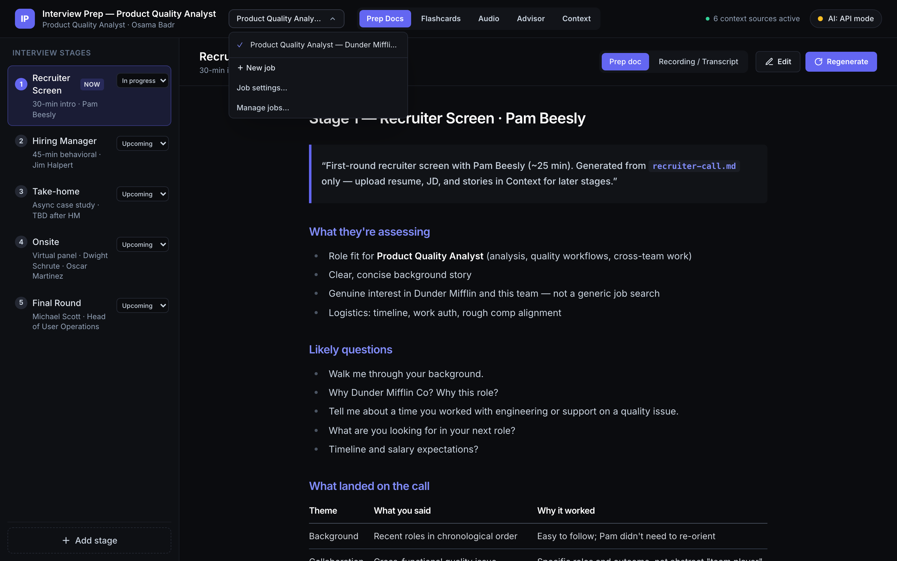
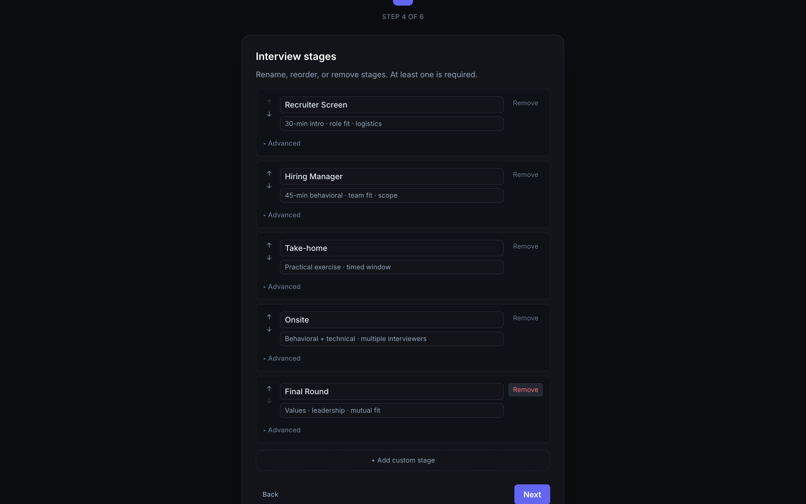
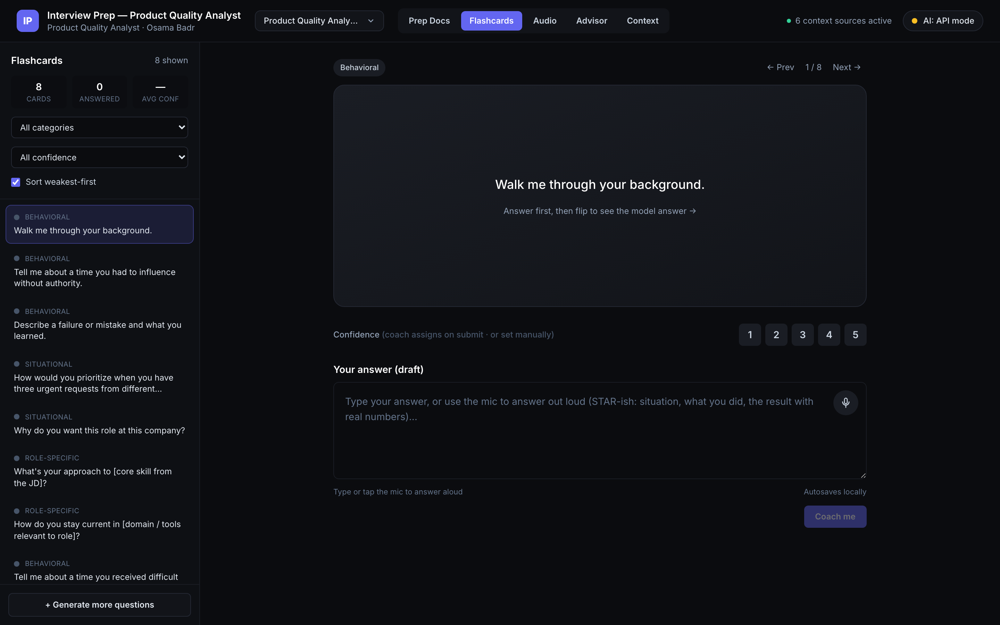

Project · Open Source
A local-first app for prepping across multiple interviews at once. It reads your resume and each job description, then generates stage-by-stage prep docs, a behavioral flashcard deck, and an audio coach that scores how you actually answer out loud. You bring your own API key, and nothing leaves your machine.

I was interviewing for several roles at once and my prep was scattered across four places: notes in Google Docs, practice questions in a Claude thread, job descriptions in tabs, and stories I kept rewriting from scratch. Every session started the same way, re-explaining which company I was interviewing with and hoping I was in the right project.
The actual problem wasn't note-taking. It was grounding. Good prep depends on the model knowing your real experience and the real job posting at the same time, and I was rebuilding that context by hand every single time.
I built the first version in under 24 hours in Cursor, the night before an interview. One job, hardcoded into a config file. Context files on disk. Prep docs generated by pasting a prompt into an AI IDE and committing the output.
It worked. I used it for that interview and it was better than what I had been doing. But it was a tool with exactly one user and exactly one job in it.
Two things broke at the same time.
First, I had three live interviews running in parallel and the app could only hold one. Everything lived in flat browser keys with no namespace, so a second job would have overwritten the first: one flashcard deck, one set of prep docs, one advisor history. Prep for Company A and prep for Company B were the same storage.
Second, when I went to open-source it, the setup instructions were "clone the repo, edit a config file, then run a prompt inside Cursor or Claude Code to generate your docs." That's a fine workflow if you already live in an AI IDE. It excludes everyone else, and it meant the first five minutes of using the app were spent editing JavaScript instead of prepping.
So the real question was: how do you turn a personal tool into something a stranger can use in five minutes, without adding a backend, without asking for an account, and without anyone's resume leaving their own machine?
Decision 01
Browser storage, not a serverA server-backed version would have been easier to build and would have killed the main promise. The whole pitch is that your resume and interview notes stay on your machine, and the moment there's a database there's a thing to trust. IndexedDB and localStorage behave identically on localhost and on a static host, so the app stays deployable without ever gaining a backend. Everything goes through one storage adapter module, so if cross-device sync is ever worth it, it slots in behind that interface instead of touching every feature.
Decision 02
Migration before featuresThe first PR shipped no visible features. It moved every flat storage key into a job namespace and wrote a versioned migration for it. I was running my own live prep data in this app while rebuilding it, so a migration bug meant losing real work the week of real interviews. The migration is idempotent, non-destructive, and keeps the old keys until the new write is confirmed. Boring, and the reason nothing was lost.
Decision 03
One profile, attached by referenceYour resume and stories don't change per job, but the tailoring does. So the profile lives once and each job attaches the entries it needs by reference, meaning an edit to your resume propagates everywhere automatically. When a job needs a tailored version, "detach and edit" copies the content into that job and breaks the link. Same pattern as an override on a base config, applied to prep material.
Decision 04
Generation in the app, not in an AI IDEThe original flow required an AI coding assistant to write your prep docs. I moved generation into an onboarding wizard: name, profile, job, stages, attach context, generate. For anyone without an API key, paste mode copies the assembled prompt to your clipboard and takes the reply back, so the app still works with nothing but a browser and a chat window. The old prompt-driven path stayed in the README as a power-user route rather than the default.
Decision 05
Five small PRs, QA'd like productionThe rebuild touched storage, routing, onboarding, settings, and docs. I split it into five stacked PRs, each under 20 files, and ran my own qa-agent against every one before merging. The repo had zero tests when this started and 110 by the end, covering the storage adapter, the migration, profile attach/detach, and context assembly. That's the part I'd point at in an interview: not that the app works, but that I treated a side project like something that could break someone's week.
Worth recording: merging the stack itself broke. Running gh pr merge --delete-branch on a base branch made GitHub close the child PR instead of retargeting it, because the branch it was based on no longer existed. Recovery meant recreating the deleted branch at its old head, reopening the PR, retargeting it to main, then deleting the branch again. The fix for the rest of the stack was to merge without deleting, retarget the next PR explicitly, then clean up. A pipeline problem, not a code problem, which is usually where these live.

Onboarding — stages are edited in the app, not in a config file

Flashcards — answer by typing or out loud, then get coached on it
Six surfaces, all scoped to whichever job you have active. Switching jobs swaps every one of them.
| Surface | What it does |
|---|---|
| Prep Docs | One doc per interview stage, editable and regeneratable on demand |
| Flashcards | Behavioral deck with AI coaching on the answer you actually gave |
| Audio | Record an answer, transcribe it, score structure and delivery |
| Advisor | Multi-turn chat that proposes new flashcards and context updates |
| Context | Paste, upload markdown or PDF, or pull a job description from a URL |
| Jobs | Switch between jobs; each keeps its own docs, deck, history, and recordings |
Public, MIT licensed, and runnable in about two minutes with a free Gemini key. There's a sample setup with demo data so you can see the whole flow before entering anything real.
Deliberately unfinished: server-side transcription still falls back to the config's default job rather than the active one, there's no component-level test coverage, and I haven't put a hosted version up. All three are known and written down rather than discovered later.
I'm still using it. Every interview I run through it surfaces something the last version handled badly, which is the only reason it keeps getting better.